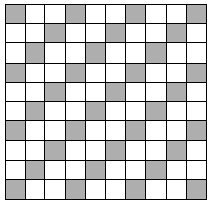
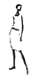
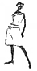
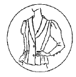

패션머천다이징산업기사 (2009-03-01 기출문제)
1과목: 패션마케팅
1. 기업의 거시적 환경요소에 해당되지 않는 것은?
- 기술(technology)
- 경쟁(competition)
- 공급자(suppliers)
- 인구통계(demography)
(정답률: 알수없음)

2. 시장세분화 기준에 대한 설명으로 틀린 것은?
- 각 집단 사이에 마케팅 활동에 대한 탄력성의 차이가 없을 때 타당성 있는 기준이 될 수 있다.
- 마케팅 활동을 통해 접근이 불가능한 시장은 시장으로서의 가치가 없다.
- 측정이 불가능한 소비자 집단은 세분화 기준이 될 수 없다.
- 쉽게 변하고 일관성이 없는 소비자 특성은 세분화의 기준이 될 수 없다.
(정답률: 알수없음)
3. 손익분기점(break even point)에 대한 설명 중 틀린 것은?
- 손익분기점이란 수익과 지출이 일치하여 이익이 0 (zero)이 될 때의 매출액을 말한다.
- 손익분기점은 경상이익이 0(zero)가 되는 점이다.
- 경상이익이 0(zero)이라는 것은 변동비와 고정비가 같은 것을 의미한다.
- 공헌이익이란 모든 비용을 고정비와 변동비로 나누고 매출액에서 변동비를 차감한 것을 말한다.
(정답률: 알수없음)
4. 브랜드를 구성하는 요소 중 발음은 불가능하지만 인식은 가능한 것은?
- 브랜드 네임(brand name)
- 등록상표(trade mark)
- 브랜드마크(brand mark)
- 카피라이트(copyright)
(정답률: 알수없음)
5. 미국의 마케팅 발전과정 중 어떤 제품에 기업의 노력을 집중시킬 것인가, 새로운 상표의 런칭 등에 대한 의사결정을 어떻게 할 것인가 등 기업의 마케팅 활동에 대한 포트폴리오를 중요시하게 된 시기는?
- 판매지향시대
- 마케팅 컨셉시대
- 전략적 마케팅시대
- 마케팅 정보시스템시대
(정답률: 알수없음)
6. 다음 중 패션 바이어의 직무범위에 포함되지 않는 것은?
- 신제품의 시장 진출 현황에 관한 정보수집
- 디자인 컨셉 설정
- 판매 담당자에 대한 상품 교육
- 소매점에서 잘 팔릴 수 있는 상품 구매
(정답률: 알수없음)
7. 제조회사의 입장에서 본 위탁판매제도의 장점은?
- 기획에서 생산, 유통을 일괄되게 통제하기 쉽다.
- 재고부담 없어 이익과 편차가 적다.
- 상품기획과 생산에만 전념할 수 있어 전문화가 가능하다.
- 상권 특성에 따른 물량 배분으로 판매를 극대화 할 수 있다.
(정답률: 알수없음)
8. 대중을 대상으로 하는 매장의 시즌 초의 상품 구성계획으로 상품에 대한 소비자 선호도를 테스트하기 위한 바람직한 상품구성 계획은?
- 넓고 얕은 구성
- 좁고 얕은 구성
- 좁고 깊은 구성
- 넓고 깊은 구성
(정답률: 알수없음)
9. 제조업 머천다이징 시스템에서 협조 지원 업무에 해당되지 않는 것은?
- 생산
- 유통
- 판매촉진
- 상품구성
(정답률: 알수없음)
10. 패션마케팅의 핵심개념에 해당되지 않는 것은?
- 패션제품(fashion product)
- 가치(value)와 만족(satisfaction)
- 패션 사이클(fashion cycle)
- 패션 시장(fashion market)
(정답률: 알수없음)
11. 브랜드 가치의 핵심으로 소비자가 한 브랜드에 대해서 갖는 애착심의 정도는?
- 브랜드 자산(brand equity)
- 브랜드 작명(brand naming)
- 브랜드 로열티(brand loyalty)
- 복수 브랜드(multi brand)
(정답률: 알수없음)
12. 상품이나 패션에 관한 전문 지식을 가지고 소비시장의 동향을 정확하게 파악하여 적절한 상품의 구매를 담당하는 패션산업부분의 스페셜리스트는?
- 디스플레이 디자이너(display designer)
- 스타일리스트(stylist)
- 패션 바이어(fashion buyer)
- 패션 컨버터(fashion converter)
(정답률: 알수없음)
13. 다음 중 리테일 머천다이저의 업무가 아닌 것은?
- 재고관리
- 판매계획
- 구매계획
- 생산계획
(정답률: 알수없음)
14. 어패럴 머천다이저의 역할 중 상품기획 업무가 아닌 것은?
- 타임스케줄 작성
- 발주수량계획 및 조정
- 디자인 컨셉 설정
- 전시회 계획 및 수주회
(정답률: 알수없음)
15. 가격 탄력성에 대한 설명으로 옳은 것은?
- 소비자의 수요변화에 따른 가격의 변화이다.
- 경쟁 제품이 없거나 소수일 경우 가격탄력성은 높다.
- 수요의 가격탄력성이 높은 경우 가격의 변화에 따라 수요가 크게 변하지 않으므로 매출액의 변화가 거의 없다.
- 수요의 가격탄력성이 낮은 경우 가격을 인상하여도 수요의 감소가 상대적으로 적기 때문에 기업의 총매출액은 증가한다.
(정답률: 알수없음)
16. 다음 중 홍보의 가장 큰 특징에 해당되는 것은?
- 광고주가 있다.
- 비용이 들지 않는다.
- 사람이 직접 홍보한다.
- 설득효과가 거의 없다.
(정답률: 알수없음)
17. 가장 흔히 사용되는 포지셔닝 방법으로, 경쟁제품과 다른 혜택을 지녔다고 소비자에게 인식시키는 포지셔닝의 유형은?
- 속성에 의한 포지셔닝
- 사용상황에 의한 포지셔닝
- 제품 사용자에 의한 포지셔닝
- 경쟁제품에 의한 포지셔닝
(정답률: 알수없음)
18. 소비자들의 구매의사 결정과정의 순서로 옳은 것은?
- 필요의 인식 → 대안의 평가 → 정보의 탐색 → 구매의사결정 → 구매 후 행동
- 필요의 인식 → 정보의 탐색 → 대안의 평가 → 구매의사결정 → 구매 후 행동
- 정보의 탐색 → 필요의 인식 → 대안의 평가 → 구매의사결정 → 구매 후 행동
- 정보의 탐색 → 필요의 인식 → 구매의사결정 → 대안의 평가 → 구매 후 행동
(정답률: 알수없음)
19. 저관여 의류상품의 제품 요인에 해당되지 않는 것은?
- 낮은 가격
- 높은 신분 상징성
- 표준화된 스타일
- 높은 실용성
(정답률: 알수없음)
20. 라이프스타일의 분석방법에 대한 설명으로 틀린 것은?
- 행동 라이프스타일 분석법 - 소비자의 라이프 스타일을 다수의 상품 및 서비스의 사용패턴으로서 파악하고 있다.
- A.I.O 분석법 - 특정 상품의 사용자와 비사용자의 차이를 활동, 관심, 의견의 측면에서 명확히 하는 데 있다.
- 태도영역 분석법 - 혜택세분화와 A.I.O 분석법의 중간에 위치하는 방법이다.
- 사이코그래픽 분석법 - 사회전체의 동향으로서 라이프 스타일이 어떻게 변화되고 있는지를 측정하는 것이다.
(정답률: 알수없음)
2과목: 패션소재기획
21. 미래지향적 이미지를 표출하기 위하여 사용된 소재군이 아닌 것은?
- 미니멀 소재군
- 하이테크 소재군
- 아방가르드 소재군
- 에스닉 소재군
(정답률: 알수없음)
22. 소재 전문회사의 신제품 개발 프로세스 중 제일 먼저 하는 것은?
- 본 생산
- 정보수집 및 용도별 분류
- 견본 샘플 분석
- 시 생산
(정답률: 알수없음)
23. 소재는 무늬가 있는 것보다는 단색 중심으로 전개하는 것이 좋으며, 색상은 무채색을 중심으로 차가운 이미지를 강조할 수 있는 것인 적합한 패션이미지는?
- 클래식(classic)
- 페미닌(feminine)
- 매니시(manish)
- 모던(modern)
(정답률: 알수없음)
24. 다음 중 3대 합성섬유로 바르게 짝지어진 것은?
- 나일론, 폴리에스테르, 라이크라
- 아크릴, 나일론, 폴리에스테르
- 폴리에스테르, 라이크라 아크릴
- 라이크라, 아크릴, 나일론
(정답률: 알수없음)
25. 알칼리 감량가공을 통하여 실크같은 촉감을 주는 소재로 일명 물실크(washable silk)로 통하는 섬유는?
- 비스코스레이온
- 폴리아미드
- 폴리에스테르
- 아크릴
(정답률: 알수없음)
26. 양털의 축융성(feliting property)이 나타나는 경우는?
- 뜨거운 물 또는 알칼리 액 속에서 마찰, 압축했을 때
- 다림질 했을 때
- 차가운 물속에서 주물러 씻을 때
- 묽은 염소수로 처리하였을 때
(정답률: 알수없음)
27. 부드러운 무광택 표면을 섬유가 일어나도록 피혁 안쪽을 기모하여 만든 것은?
- 톱 그레인(top grain)
- 언더코트(undercoat)
- 그래이징(glazing)
- 스웨드(suede)
(정답률: 알수없음)
28. 직물에 사용되는 실을 선택하거나 편직법, 프린터를 창조하고 색상을 조정하는 스페셜리스트는?
- 패션 디자이너
- 스타일리스트
- 텍스타일 디자이너
- 패션 머천다이저
(정답률: 알수없음)
29. 정부 공인기관이 의류제품의 품질향상과 소비자 보호 및 건전한 유통질서 확립을 위하여 우수 생산업체를 선정하여 원부자재 특성시험과 완제품의 외관검사를 실시하여 우수한 상품에 부착하는 인증제도는?
- 품질보증 마크(Q마크)
- 중소기업 우수제품 마크
- 에콜로지 마크
- 굳 헬스(Good Health) 마크
(정답률: 알수없음)
30. 하절기에 사용하고 남은 재고인 소모 크레이프(crepe) 소재를 추동용으로 계속 사용하기 위해서 필요한 가공은?
- 신징(singeing)
- 밀링(milling)
- 멜톤(melton)
- 클리어 컷(clear cut)
(정답률: 알수없음)
31. 소재를 트렌드에 따라 분류하는 경우 가장 적합하지 않은 것은?
- 얇은 면직물 - 로멘틱이나 엘레강스 이미지
- 두꺼운 마직물 - 세련되고 남성적인 이미지
- 거칠고 두터운 면소재 - 스포티하고 컨트리한 이미지
- 일반 모직물 - 세련되고 남성적인 이미지
(정답률: 알수없음)
32. 소재업체의 소재기획 과정이 아닌 것은?
- 소재방향 설정
- 소재 맵
- 수주
- 원형개발 및 샘플제작
(정답률: 알수없음)
33. 스테이플 파이버(staple fiber)로 만든 옷감의 일반적인 특징이라고 볼 수 없는 것은?
- 함기량이 많아서 따뜻하다.
- 통기성과 투습성이 좋다.
- 광택이 좋고 촉감이 차다.
- 일반 의류용 직물로서 적합하다.
(정답률: 알수없음)
34. 소재기획을 위한 검토항목 중 필수적으로 고려해야 될 사항이 아닌 것은?
- 소재와 스타일의 관계
- 소재의 생산, 납기 관계
- 소재의 품질관리 관계
- 소재의 봉합검사 관계
(정답률: 알수없음)
35. 다음 그림의 조직도에 대한 설명으로 틀린 것은?

- 표면이 평활하며 광택이 우수하다.
- 평직보다 내구성, 드레이프성 및 유연성이 좋다.
- 데님, 서지, 개버딘 등이 대표적인 직물이다.
- 사선방향으로 능선 또는 사문선이 나타나므로 사문직이라고도 한다.
(정답률: 알수없음)
36. 페미닌한 블라우스 디자인에 맞는 소재 선택이 아닌 것은?
- 폴리에스테르 박지
- 저지
- 조젯
- 실크
(정답률: 알수없음)
37. 섬유의 내약품성에 대한 설명으로 틀린 것은?
- 면은 산에 약하다.
- 폴리에스테르는 산에 약하다.
- 아크릴은 산에 강하다.
- 비스코스레이온은 산에 약하다.
(정답률: 알수없음)
38. 가죽 가공공정 중 연마 후 선단부분을 잘라내는 것은?
- 탄닝(tanning)
- 버핑(buffing)
- 스너핑(snuffing)
- 마블링(marbling)
(정답률: 알수없음)
39. 다음 중 재생섬유에 해당되는 것은?
- 아마
- 캐시미어
- 비스코스레이온
- 석면
(정답률: 알수없음)
40. 견(silk) 섬유에 대한 설명으로 틀린 것은?
- 생사를 정련할 때 세리신을 완전히 제거하지 않는 것이 강도를 유지하기가 좋다.
- 내일광성은 증량견이 가장 좋고, 정련견, 생견의 순으로 나빠진다.
- 야잠견은 생산량도 적고 품질도 가잠견에 비하면 뒤떨어진다.
- 증량견은 견의 무게의 50%까지 금속염을 고착하여 무게를 증가시킬 수 있다.
(정답률: 알수없음)
3과목: 유통관리 및 광고
41. 점포의 판매실적 분석을 위해 필요한 항목들의 설명으로 틀린 것은?
- 매출액은 실제 판매액으로 반품, 할인으로 인한 금액 손실을 뺀 나머지를 말한다.
- 순이익은 일정기간에 걸쳐 발생한 모든 수익에서 비용의 합계를 뺀 차액이다.
- 영업이익은 매출이익에서 판매관리비용을 뺀 이익이다.
- 경상이익은 영업이익에서 영업외 수익을 뺀 이익을 말한다.
(정답률: 알수없음)
42. 패션소매상 유형별 상품구색전략으로 그 연결이 틀린 것은?
- 백화점 - 상품구색 폭은 넓고, 깊이는 깊거나 중간임
- 전문점 - 상품구색 폭은 좁고, 깊이는 깊음
- 대리점 - 상품구색 폭은 좁고. 깊이는 중간에서 얕음
- 재래시장 - 상품구색 폭은 넓고, 깊이는 깊음
(정답률: 알수없음)
43. 저마진을 유지하기 위해 건물이나, 인건비 등의 비율을 낮게 하고 백화점보다 높은 상품회전율과 셀프서비스를 채택한 유통업체의 형태는?
- 할인점
- 슈퍼마켓
- 양판점
- 편의점
(정답률: 알수없음)
44. 다음 중 PR의 효과가 아닌 것은?
- 신제품 출시에 도움을 준다.
- 반복구매를 유도할 수 있다.
- 성숙제품을 재포지셔닝하는 것을 도운다.
- 제품범주에 관심을 고조시킨다.
(정답률: 알수없음)
45. 상품구성에 대한 설명으로 옳은 것은?
- 중점 상품은 유행을 타는 상품을 말한다.
- 전략상품은 싼 가격의 판촉상품이나 고급품 등을 의미한다.
- 보완상품은 참신한 디자인의 신제품을 포함한다.
- 기업이나 소매점의 수준향상을 목적으로 하는 상품은 중점상품이다.
(정답률: 알수없음)
46. 어떤 브랜드가 재킷, 팬츠, 스웨터, 원피스, 티셔츠 등의 상품군을 골고루 갖추어 놓았을 때를 일컫는 말은?
- 확장제품이 다양하다.
- 상품의 깊이가 깊다.
- 실체상품이 다양하다.
- 상품의 폭이 넓다.
(정답률: 알수없음)
47. 다음 중 인테리어에 속하지 않는 것은?
- 매장바닥
- 간판
- 쇼 윈도우
- 쇼핑백
(정답률: 알수없음)
48. 제조업체로부터 사입하여 단순히 판매만 하는 소매기능에서 더 나아가 직접 디자인을 기획, 생산하는 제조기능까지 갖춘 전문점은?
- 사입형 패션전문점
- 제조소매업
- 메이커 토탈 샵
- 멀티 브랜드 샵
(정답률: 알수없음)
49. 판매사원의 역할이 아닌 것은?
- 패션어드바이저 & 코디네이터
- 매장 순회
- 커뮤니케이터
- 상품계획을 위한 리포터
(정답률: 알수없음)
50. 다음 광고매체 중 기록성과 보전성이 있으며 소구대상이 어느 정도 명확한 장점이 있으나 준비기간이 길고 가격이 비싼 단점이 있는 것은?
- TV
- 잡지
- 라디오
- 신문
(정답률: 알수없음)
51. 패션 유통관리의 형태 중 완사입제도의 설명에 해당되는 것은?
- 대리점주가 의류업체나 도매시장에서 상품을 사다가 판매하고, 팔다 남은 상품의 재고도 점주가 책임을 지는 것이다.
- 의류제조업체가 기획과 생산뿐만 아니라 판매도 책임지는 형태로, 팔다 남은 상품의 재고는 재고회사가 책임지는 것이다.
- 재고에 대한 위험을 본사와 대리점주가 일정 부분씩 분담하는 것이다.
- 대리점주에게 상품을 제공하고 대리점주들은 판매에 따른 수수료를 받는 것이다.
(정답률: 알수없음)
52. 광고매체 중 TV에 대한 설명으로 옳은 것은?
- 짧은 시간내에 많은 사람들에게 광고 메시지를 전달할 수 있다.
- 넓은 범위에 많은 정보를 신속히 전달할 수 있다.
- 표적시장의 소비자에게 다른 매체보다 효과적으로 메시지를 전달할 수 있다.
- 광고의 수명이 길고, 많은 양의 정보를 전달할 수 있다.
(정답률: 알수없음)
53. 바이어가 활용하는 주문형태에 대한 설명 중 틀린 것은?
- 정규주문(regular orders) - 바이어가 사입처를 대상으로 정규제품을 주문하는 것이다.
- 특별주문(special orders) - 불규칙적인 제품의 수급시 활용되는 주문이다.
- 이월주문(back orders) - 기간 내에 선적하지 못하여 미루어진 주문이다.
- 블랭킷 주문(blanket orders) - 제품이 급히 필요한 경우에 활용되는 주문이다.
(정답률: 알수없음)
54. 공공기관이나 사회단체 행사 등에 상표를 삽입하거나 협찬사실을 공표하는 MPR(Marketing Public Relation)의 주요수단은?
- CF
- VMD
- PPL
- MD
(정답률: 알수없음)
55. 패션제품의 분류 중 구매습관에 의한 분류방식이 아닌 것은?
- 편의품(Convenience products)
- 선매품(Shopping products)
- 전문품(Specialty products)
- 할인품(Off-priced products)
(정답률: 알수없음)
56. 영업계획을 효과적으로 수행하기 위한 영업기별 전략에서 실매기의 전략이 아닌 것은?
- 중심 품종의 컬러별, 사이즈별 물량비축 및 소화
- 중심 존의 상품 다양성 확대
- 적정가격 중심으로 가격 제안
- 볼륨 전개
(정답률: 알수없음)
57. 인터넷 쇼핑몰의 유형 구분에 있어 특성과 업체의 연결이 틀린 것은?
- 종합몰 - 백화점 기반 - 롯데닷컴
- 종합몰 - 홈쇼핑 기반 - CJ몰
- 마켓 플레이스 - 경매사이트 - 야후
- 포털몰 - 수입제품 전문몰 - 네이버
(정답률: 알수없음)
58. 다음 중 전략상품에 포함되지 않는 것은?
- 저가격 판매촉진 상품
- 참신한 디자인 및 신제품
- 점포의 품위 향상을 위한 고가격 제품
- 유행성이 강하지 않은 베이직 상품
(정답률: 알수없음)
59. 비주얼 머천다이징의 의미를 잘못 표현한 것은?
- 비주얼 머천다이징은 점포이미지를 고려하여 통합적으로 관리한다.
- 비주얼 머천다이징은 광고, 판촉과 일관된 메시지를 전달한다.
- 비주얼 머천다이징은 꾸미기 위한 것이 목적이다.
- 비주얼 머천다이징은 상품을 시각적으로 전달하는 과정이다.
(정답률: 알수없음)
60. 독창적인 비주얼 머천다이징을 통한 마케팅 효과로 보기 어려운 것은?
- 상품분류에 의해서 합리적인 배치를 할 수 있다.
- 점포 아이덴티티(store identity)를 형성한다.
- 상품기획에서 판매현장까지 업무의 영역이 광범위하여 추가적인 전문 인력의 공급이 필요하다.
- 접객업무의 비효율성을 방지하고 물류시스템을 효율적으로 운영함으로써 기업이윤을 증대시킨다.
(정답률: 알수없음)
4과목: 패션디자인론 및 의복구성학
61. 동일색상의 배색에서 톤의 변화를 살린 배색의 기법은?
- 악센트(accent) 배색
- 트리콜로(tricolore) 배색
- 톤 온 톤(tone on tone) 배색
- 톤 인 톤(tone in tone) 배색
(정답률: 알수없음)
62. 옷감의 겉과 안의 구별방법으로 틀린 것은?
- 옷감의 식서 부분이나 단쪽에 문자나 표식이 찍히지 않은 쪽이 겉이다.
- 직물의 양 끝에 있는 식서에 구멍이 있는 경우 구멍이 움푹 들어간 쪽이 겉이다.
- 더블 폭의 모직물 등은 겉이 안으로 들어가도록 접어 말아져 있다.
- 첨모직물인 경우는 털이 분명히 있는 쪽이 겉이다.
(정답률: 알수없음)
63. 가장 기본이 되는 스커트로서 엉덩이 둘레선에서 밑단까지 수직으로 내려오는 형태의 스커트는?
- 플레어 스커트
- 타이트 스커트
- 고어 스커트
- 개더 스커트
(정답률: 알수없음)
64. 다음 중 안감의 역할이 아닌 것은?
- 주름 방지성이 있고 탄성 회복성을 좋게 한다.
- 보온 효과를 높인다.
- 착용시 미끄러운 성질을 이용하여 쉽게 입고 벗을 수 있다.
- 겉감이 땀이나 더러움, 마모로 손상되는 것을 방지한다.
(정답률: 알수없음)
65. 21세기 유행 현상에 대한 설명으로 틀린 것은?
- 디자이너 오뜨꾸띄르보다 프레타포르테가 패션트렌드를 이끌어 가는 경향이다.
- 대중보다는 소수 상류층이 유행을 이끌어 가는 경향으로 이동한다.
- 고객 생활전반을 대상으로 하는 라이프스타일로 발전하고 있다.
- 개성화, 다양화, 단품화 경향으로 이동한다.
(정답률: 알수없음)
66. 다음 중 디자인의 조건이 아닌 것은?
- 합리성
- 경제성
- 순수성
- 심미성
(정답률: 알수없음)
67. 비옷의 가장 적당한 조건에 해당되는 것은?
- 보온성이 있고 내수성이 좋은 것
- 습윤속도가 빠르고 보온성이 좋은 것
- 습윤속도가 늦고 방수성이 좋은 것
- 통기성이 크고 내수성이 좋은 것
(정답률: 알수없음)
68. 마커에 대한 설명 중 틀린 것은?
- 형입(型入)이라고도 한다.
- 천의 절감 효과가 높다.
- 패턴이 크면 배열하기 쉬우나 원단 손실량이 크다.
- 천의 표면이 짧게 결이 있는 경우는 결을 무시하고 마커 작업을 한다.
(정답률: 알수없음)
69. 의복디자인에 효과적인 선의 이용에 대한 설명으로 틀린 것은?
- 뚱뚱하고 키가 작은 체형에는 옷의 여유분을 많게 하며 주름을 가급적 살리는게 좋다.
- 목이 긴 경우에는 칼라를 약간 높이는 것이 좋다.
- 키가 크고 마른 경우는 약간의 볼륨을 주되 지나치게 헐렁하면 오히려 역효과를 내게 된다.
- 얼굴이 작은 사람에게 큰 칼라는 대비의 효과로 인하여 작은 얼굴을 강조하게 된다.
(정답률: 알수없음)
70. 길 원형 제도시 필요한 인체계측 항목이 아닌 것은?
- 가슴둘레
- 등길이
- 허리둘fp
- 어깨너비
(정답률: 알수없음)
71. 다음 중 생산의뢰서 작성에 가장 필요하지 않는 사항은?
- 소재
- 스타일화
- 도식화
- 사이즈
(정답률: 알수없음)
72. 다음 중 유행이란 의미를 갖고 있지 않는 용어는?
- 패션(fashion)
- 모드(mode)
- 보그(vogue)
- 디자인(design)
(정답률: 알수없음)
73. 다음 그림 중 디자인 요소 가운데 강조점이 하나로 된 디자인은?


(정답률: 알수없음)
74. 다음 중 수평선에서 느낄 수 있는 느낌은?
- 부드러움, 섬세함
- 존엄적이며 의지적임
- 평화, 안정감
- 예민하고 날카로움
(정답률: 알수없음)
75. 다음 중 패션디자인의 요소가 아닌 것은?
- 장식
- 색채
- 비례
- 재질
(정답률: 알수없음)
76. 의복의 형태를 구성하고 있는 선 중 곡선의 인체를 나타내기 위하여 들어간 부분을 박음으로 생기는 선은?
- 다트선
- 솔기선
- 디자인선
- 디테일선
(정답률: 알수없음)
77. 내마모선과 신도는 높으나 열에 약하며, 의복 봉제용보다 구두 밑창, 가방, 소매 등 공업용으로 많이 사용되는 재봉사는?
- 마봉사
- 면봉사
- 폴리에스테르봉사
- 나일론봉사
(정답률: 알수없음)
78. 의복의 형태 중 상의와 하의가 분리되고 몸에 밀착되는 입체형의 의복에 해당되는 것은?
- 드레이퍼리(drapery)형
- 과두의(poncho)형
- 카프탄(caftan)형
- 튜닉(tunic)형
(정답률: 알수없음)
79. 그레이딩에 대한 설명 중 틀린 것은?
- 표준이 되는 사이즈를 중심으로 각 부위별 치수의 감소와 증가에 따라 다른 사이즈의 패턴을 제작하는 방법이다.
- 대량 생산하는 기성복 업계에서는 사용하지 못하는 단점이 있다.
- 제작 방법에는 트랙 시프트법과 래디얼 시프트법 등이 있다.
- 최근 그레이딩은 컴퓨터 그레이딩이 개발되어 사용되고 있다.
(정답률: 알수없음)
80. 다음과 같은 칼라의 명칭은?

- 숄 칼라
- 롤 칼라
- 피터팬 칼라
- 세일러 칼라
(정답률: 알수없음)
5과목: 패션정보분석
81. 다음 중 시계열로 분류한 패션정보의 성격이 다른 것은?
- 프로모스틸(Promostyl)
- 프리미에르 비종(Premiere vision)
- 인터스토프(Interstoff)
- 엑스포 필(Expofil)
(정답률: 알수없음)
82. 가격정책의 기본적 이념이 아닌 것은?
- 상품이 구매되기 쉬운 가격
- 수요자의 욕구충족
- 메이커가 이익을 획득할 수 있는 가격
- 경쟁자의 가격수준을 무시한 이윤의 극대화
(정답률: 알수없음)
83. 다음 중 패션 트렌드와 감성 용어가 잘못 연결된 것은?
- 엘레강스(Ellegance) - 고상한, 우아한, 여성스러운
- 매니쉬(mannish) - 기능적인, 서구적인, 강한
- 엑조틱(exotic) - 자유분방한, 원시적인, 서민적
- 로맨틱(romantic) - 화려한, 장식적인, 영화같은
(정답률: 알수없음)
84. 컬러 트렌드에는 유행할 색상의 톤(tone)이 포함된다. 다음에 제시된 톤들 중에서 명도와 채도가 모두가 가장 높은 톤은?
- Dark
- Bright
- Strong
- Deep
(정답률: 알수없음)
85. 수집 분류되어진 정보를 분석하기 위한 단계로 틀린 것은?
- 요구사항에 대한 분석이 이루어져야 한다.
- 분석요인을 전개한 후 분석한다.
- 관리요인 열거를 통하여 최종적인 결과를 도출해 나간다.
- 부분분석과 종합분석을 통하여 최종적인 결과를 도출해나간다.
(정답률: 알수없음)
86. 스타일 경향분석에 대한 내용 중 틀린 것은?
- 가장 포인트가 될 수 있는 네크라인, 칼라, 슬리브, 커프스 등의 경향을 분석한다.
- 스타일의 수집, 정리, 분석은 바른 시각으로 파악할 수 있는 사진이나 일러스트에 의한 방법이 적당하다.
- 일정한 기준을 두고 모집단을 선정하여 계속적으로 수집할 필요가 있다.
- 그래프에 의한 분석방법과 사진의 그룹핑에 의한 도해 분석방법이 있다.
(정답률: 알수없음)
87. 다음 중 소재정보 분석을 위한 트렌드 요인이 아닌 것은?
- 사용 섬유의 종류
- 염색 가공방법
- 소재 메이커의 상표 인지도
- 실루엣과 디테일의 경향
(정답률: 알수없음)
88. 라이프스타일(lifestyle)의 설명으로 가장 옳은 것은?
- 상류계층의 고급스럽고 화려한 생활 방식을 말한다.
- 자연으로 돌아가려는 생활, 의복 전반에 나타난 종합양식이다.
- 사람들이 살아가는 방식으로 보통 개인의 활동, 관심, 의견을 말한다.
- 패션 리더들이 추구하는 자유와 다양성을 가진 혁신적인 의복착용양식이다.
(정답률: 알수없음)
89. 머천다이저나 디자이너가 패션 이미지에 접근하는 범위를 설정해 주는 역할을 하며 이미지의 표현 방법을 제시하는 것은?
- 시장정보
- 패션테마
- 색채의 영향
- 소재의 경향
(정답률: 알수없음)
90. 다음 중 시장조사시 해당되는 내용이 아닌 것은?
- 시장규모와 시장구조
- 시장입지조건
- 새로 등장한 신상품
- 소비자 의식구조
(정답률: 알수없음)
91. 다음 중 라이프스타일의 요소가 아닌 것은?
- 자신, 사회문제, 정치, 경제, 기업, 제품, 교육, 문화와 미래에 대한 의견
- 가족, 가정, 일, 오락, 유행에 대한 관심
- 지역사회, 식품, 매체, 성취에 대한 노력
- 일, 취미, 행사, 휴가, 지역사회, 쇼핑, 스포츠에 대한 활동
(정답률: 알수없음)
92. 리테일머천다이징 수행시 경쟁점 조사에 대한 설명으로 틀린 것은?
- 경쟁점 설정의 포인트로는 타깃, 취급 아이템, 캐릭터, 가격선, 서비스 방법 등이다.
- 경쟁점 조사내용은 마케팅 전략, 판매력, 조직력 등이며 라이프스타일별 분석은 불필요하다.
- 경쟁점 상권 내의 소비자가 상품구매를 위해 선택할 수 있는 자기 점포 이외의 점포를 말한다.
- 경쟁점 조사는 자사의 스토어 포지셔닝 전략 확인이 전제조건이다.
(정답률: 알수없음)
93. 일반적으로 수집된 정보를 토대로 하여 그 미래를 예측하는 방법이 아닌 것은?
- 라이프사이클 예측법
- 시계열 예측법
- 시각화 예측법
- 수요계층 예측법
(정답률: 알수없음)
94. 패션에 영향을 미치는 여러 요인을 분석하여 패션경향을 몇 개의 테마로 나누고 패션의 흐름을 분류하는 것은?
- 패션 컨셉
- 패션 테마
- 패션 트렌드
- 패션 인플루언스
(정답률: 알수없음)
95. 정보분석의 방법과 내용의 연결이 틀린 것은?
- 통계분석 방법 - 수량적 비교
- 상관분석 방법 - 상호연관 관계 분석
- 추리분석 방법 - 결론전제 분석
- 패턴분석 방법 - 사안발생의 예측분석
(정답률: 알수없음)
96. 다음 중 국내 패션정보원이 하는 역할이 아닌 것은?
- 각 회사의 카탈로그나 정기 간행물 수집
- 경쟁사의 동정 및 상품 조사
- 패션코디네이터와 바이어의 예측정보 수집
- 세계 유명 디자이너브랜드의 패션쇼, 비디오 필름이나 슬라이드 수집
(정답률: 알수없음)
97. 신속도와 정확도 측면에서 정보에 해당되는 것은?
- 기초정보
- 일반정보
- 전문정보
- 가공정보
(정답률: 알수없음)
98. 외적환경 요인 중 패션기업에 직접적 영향을 주는 과업 환경이 아닌 것은?
- 소비자
- 패션산업
- 경쟁업체
- 생태학 환경
(정답률: 알수없음)
99. 소비자 조사방법 중 관찰법에 해당되지 않는 것은?
- 스트리트 패션(street fashion)
- 매장내 소비자 반응 조사
- POS 시스템을 통한 조사
- 인과관계 조사
(정답률: 알수없음)
100. 국내 섬유제품을 해외 유명 브랜드를 능가하는 수준으로 향상시키고 세계일류 상품으로 경쟁력을 제고하기 위한 품질 보증제도는?
- 명품마크
- 중소기업 우수제품 마크
- 기능 마크
- 품질보증 마크(Q마크)
(정답률: 알수없음)